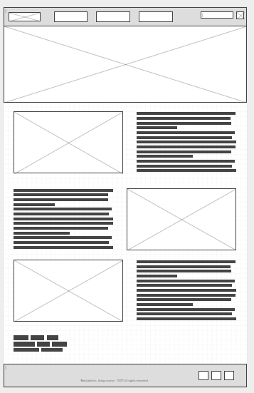

Samples

Through computer simulation of events, we can create realistic scenarios that
will serve to generate and build databases for future analyses.
Our random generators are designed for healthcare scenarios. As an example,
we can generate COVID19 contamination probability distributions for analysis.
Even if you regenerate the data, the distributions will look similar, but they will never
be the same. This guarantees the variability of samples collected from the same population.
In our tools we provide resources such as graphics in 2 and 3 dimensions,
builder of tables and maps, and so on. This will help you learn to choose the
best resources for your analysis and presentation of results.
You will be able to work as a team during your analyses. This way,
you can discuss your results with your training colleagues and improve your skills
by comparing the results and discussing the method of analysis as well.
Navigation
Site Map
Home
Samples
Contact Us
Samples
Samples will show you how the course and the technological resources will improve your learning. The computational simulation tools are essential didactic methods capable of improving your learning experience during the classes. You will improve your biostatistics skills by using our simulators. Try here!
Contact us
Browse and rate our content and teaching methods, please. Your opinions and suggestions are important to us. As always, we are improving our services for you! Try here!
